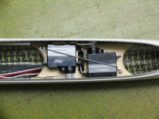
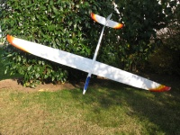
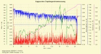
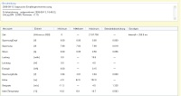

2009, Cappuccino, 2,6m Spannweite und dem HD 45 als Flächenprofil, Wölbklappen, 1,8 Kg Masse.
Der Cappuccino ist mein erstes komplett fertig gekauftes Voll-GFK/CFK Modell von Jürgen Schmierer in Stuttgart-Weilimdorf. Als Servos habe ich mich für hochwertige und kräftige Robbe S3150 entschieden und an allen 6 Stellen verwendet. Deshalb hat der Servoeinbau auch etwas länger gedauert als für dieses Modell vorgesehenen, da die mitgelieferten Einbaurahmen nicht ohne Änderung verwendet werden konnten.
Der Segler hat günstige Abmessungen und wird bei mir mit dem Staufenbiel Modellrucksack aufbewahrt und transportiert. Es ist in meinen Augen ein wirkliches Universalmodell. Es kann sehr langsam, mit gesetzten Wölbklappen, sowie sehr zügig geflogen werden. Dabei verhält es sich immer sehr ausgewogen und gut kontrollierbar. Für stärkeren Wind habe ich eine Flächensteckung gefüllt mit drei 6 mm Rundstahlstäben, als Ballast.
Der Cappuccino ist, wie die meisten Modelle von mir, mit einer LiIo Empfängerstromversorgung ausgestattet. Dazu ist es wichtig den Stromverbrauch zu kennen, um die Längsreglerschaltung zu dimensionieren.
 